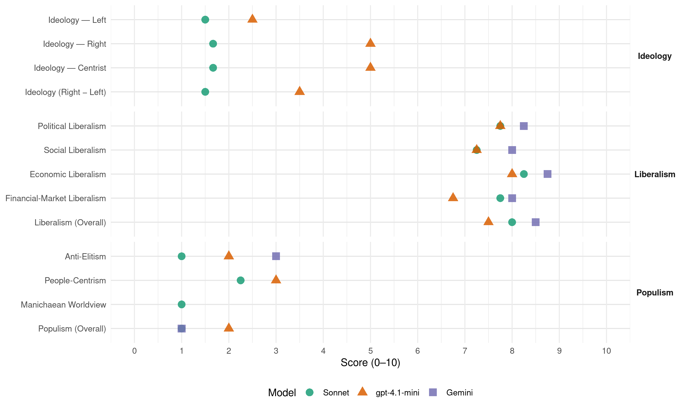

H (Norway, 1985)
manifesto_id 12620_198509
Get full text: This site shows derived annotations and short verbatim quotes only. The full manifesto text is © Manifesto Project / WZB — obtain it via manifesto-project.wzb.eu using the manifesto_id above.
Headline scores
| Dimension | Sonnet | gpt-4.1-mini | Gemini |
|---|---|---|---|
| Populism (Overall) | 1.0 | 2.0 | 1.0 |
| Anti-Elitism | 1.0 | 2.0 | 3.0 |
| People-Centrism | 2.2 | 3.0 | – |
| Manichaean Worldview | 1.0 | – | – |
| Ideology (Right − Left) | 1.5 | 3.5 | – |
| Liberalism (Overall) | 8.0 | 7.5 | 8.5 |
| Political Liberalism | 7.8 | 7.8 | 8.2 |
| Social Liberalism | 7.2 | 7.2 | 8.0 |
| Economic Liberalism | 8.2 | 8.0 | 8.8 |
| Financial-Market Liberalism | 7.8 | 6.8 | 8.0 |
Evidence per dimension
Economic Liberalism
Gemini · score 9.0 · verified · chunk 1
“fri konkurranse og en desentralisert markedsøkonomi”
størst mulig grad skal bygge på fri konkurranse og en desentralisert markedsøkonomi, samtidig som
Gemini · score 9.0 · verified · chunk 2
“Størst mulig grad av frihandel for varer og tjenester”
Størst mulig grad av frihandel for varer og tjenester landene imellom er en forutsetning for økt internasjonal arbeidsdeling
Gemini · score 9.0 · verified · chunk 3
“markedsføres i åpen konkurranse mellom”
abonnentnett og leveranse av brukerutstyr sees i sammenheng og markedsføres i åpen konkurranse mellom Televerket og private
Gemini · score 8.0 · verified · chunk 4
“aktiv internasjonal frihandelspolitikk er nødvendig”
gjeldsproblemer. Øket samarbeid om handelspolitiske, finansielle og monetære spørsmål er således en forutsetning for å oppnå vekst, både i utviklings- og industrilandene. En aktiv internasjonal frihandelspolitikk er nødvendig for utvikling, vekst og velstand
gpt-4.1-mini · score 9.0 · verified · chunk 1
“sosial markedsøkonomi, dvs. en økonomi hvor ressursfordelingen i stor grad skjer via markeder”
Økonomisk fremgang og sosial trygghet fremmes best gjennom en sosial markedsøkonomi, dvs. en økonomi hvor ressursfordelingen i stor grad skjer via markeder, men der sosiale hensyn er sikret gjennom offentlig definerte rammebetingelser.
gpt-4.1-mini · score 8.0 · verified · chunk 2
“Det må stimuleres til økt konkurranse, ved at det føres en aktiv pris- og konkurransepolitikk”
Det må stimuleres til økt konkurranse, ved at det føres en aktiv pris- og konkurransepolitikk med særlig vekt på å hindre monopoler og motvirke konkurransehindrende avtaler og ordninger.
gpt-4.1-mini · score 8.0 · verified · chunk 3
“Det offentlige engasjement må ta utgangspunkt i det klare vekstpotensiale”
…og den distriktspolitiske betydning næringen har. - Reiselivsnæringen må i større grad likestilles med andre næringer i skatte- og avgiftspolitisk sammenheng. Det gis støtte til produktutvikling, og det internasjonale markedsføringsapparat styrkes. Den generelle markedsføring og presentasjon av Norge utenlands intensiveres.
gpt-4.1-mini · score 7.0 · verified · chunk 4
“arbeide aktivt for å fremme forpliktende internasjonalt økonomisk samarbeid”
Norske myndigheter må fortsatt arbeide aktivt for å fremme forpliktende internasjonalt økonomisk samarbeid og en bedre samordning av landenes økonomiske politikk, bl.a. i OECD, GATT, EFTA og andre internasjonale organer.
Sonnet · score 8.0 · verified · chunk 1
“fri konkurranse og en desentralisert markedsøkonomi”
produksjon og omsetning i størst mulig grad skal bygge på fri konkurranse og en desentralisert markedsøkonomi
Sonnet · score 9.0 · verified · chunk 2
“frihandel for varer og tjenester landene imellom”
Størst mulig grad av frihandel for varer og tjenester landene imellom er en forutsetning for økt internasjonal arbeidsdeling
Sonnet · score 8.0 · verified · chunk 3
“Åpen konkurranse på utstyrssiden er et annet viktig virkemiddel”
Åpen konkurranse på utstyrssiden er et annet viktig virkemiddel for å skape et marked tilpasset kundenes behov.
Sonnet · score 8.0 · verified · chunk 4
“En aktiv internasjonal frihandelspolitikk er nødvendig”
En aktiv internasjonal frihandelspolitikk er nødvendig for utvikling, vekst og velstand i hele verden.
Financial-Market Liberalism
Gemini · score 8.0 · verified · chunk 1
“lovbestemt meglerprovisjon ved verdipapir- og eiendomshandel”
Ordningen med lovbestemt meglerprovisjon ved verdipapir- og eiendomshandel oppheves.
Gemini · score 9.0 · verified · chunk 2
“Et fritt kredittmarked med markedsmessig styring av kredittilførselen”
Et fritt kredittmarked med markedsmessig styring av kredittilførselen vil sikre at utlånsmidlene går til de prosjektene
Gemini · score 7.0 · verified · chunk 3
“kapitalbehov gjennom de ordinære låneinstitusjoner”
Næringen bør i større grad enn hittil dekke sitt kapitalbehov gjennom de ordinære låneinstitusjoner.
Gemini · score 8.0 · verified · chunk 4
“friere nordisk aksje- og kapitalmarked”
nordiske land. - Det må arbeides med sikte på et friere nordisk aksje- og kapitalmarked, som ledd i en liberalisering innenfor
gpt-4.1-mini · score 7.0 · verified · chunk 1
“konkurranse og motarbeide monopoler og karteller”
Staten har et viktig ansvar for å fremme konkurranse og motarbeide monopoler og karteller. Staten bør ikke ha forretningsmessige oppgaver når disse kan løses like godt eller bedre av private.
gpt-4.1-mini · score 7.0 · verified · chunk 2
“Det må stimuleres til konkurranse mellom finansinstitusjonene”
Høyre vil stimulere til konkurranse mellom finansinstitusjonene. Som ledd i arbeidet for å fremme eksport av finansielle tjenester og stimulere til internasjonalisering av norsk næringsliv, vil Høyre ytterligere liberalisere valutalovgivningen og dermed gjøre det norske kapitalmarkedet mer fleksibelt og konkurransedyktig.
gpt-4.1-mini · score 7.0 · verified · chunk 3
“Det må legges betydelig vekt på å styrke kontakten og samspillet mellom universitetene”
…og det øvrige samfunnslivet. Gjennom en friere budsjettmessig stilling, organisatoriske tiltak og utvidede muligheter for oppdragsforskning, må samspillet mellom våre grunnforskningsmiljøer og brukerne styrkes. - Høyre vil også arbeide for at det opprettes egne etableringsselskaper i tilknytning til viktige universitets- og høyskolemiljøer, med sikte på å øke den praktiske og økonomiske utnyttelse av institusjonenes forskning.
gpt-4.1-mini · score 6.0 · verified · chunk 4
“Norge bør arbeide for mer forpliktende internasjonalt valutasamarbeid”
Norge bør arbeide for mer forpliktende internasjonalt valutasamarbeid for å redusere de store svingningene i valutakursene. Norge må delta aktivt i det internasjonale energisamarbeid.
Sonnet · score 7.0 · verified · chunk 1
“lovbestemt meglerprovisjon ved verdipapir”
Ordningen med lovbestemt meglerprovisjon ved verdipapir- og eiendomshandel oppheves
Sonnet · score 9.0 · verified · chunk 2
“fritt kredittmarked med markedsmessig styring”
Et fritt kredittmarked med markedsmessig styring av kredittilførselen vil sikre at utlånsmidlene går til de prosjektene som gir den beste utnyttelse av ressursene
Sonnet · score 7.0 · verified · chunk 3
“Næringen bør i større grad dekke sitt kapitalbehov gjennom de ordinære låneinstitusjoner”
Næringen bør i større grad enn hittil dekke sitt kapitalbehov gjennom de ordinære låneinstitusjoner.
Sonnet · score 8.0 · verified · chunk 4
“friere nordisk aksje- og kapitalmarked”
Det må arbeides med sikte på et friere nordisk aksje- og kapitalmarked, som ledd i en liberalisering innenfor hele OECD-området.
Political Liberalism
Gemini · score 9.0 · verified · chunk 1
“demokrati med maktspredning og medinnflytelse”
Høyre ser demokrati med maktspredning og medinnflytelse som nødvendig for å sikre
Gemini · score 8.0 · verified · chunk 2
“sikre at bl.a. prioriterte oppgaver og svake gruppers behov blir ivaretatt”
Det er en særlig politisk oppgave å sikre at bl.a. prioriterte oppgaver og svake gruppers behov blir ivaretatt.
Gemini · score 8.0 · verified · chunk 3
“Ytringsfrihet og åndsfrihet er forutsetninger”
MEDIEPOLITIKK Ytringsfrihet og åndsfrihet er forutsetninger for et levende demokrati.
Gemini · score 8.0 · verified · chunk 4
“rettssikkerhet, trosfrihet og ytringsfrihet er grunnleggende”
MENNESKERETTIGHETER OG FLYKTNINGEHJELP Rettsikkerhet, trosfrihet og ytringsfrihet er grunnleggende menneskerettigheter. FN’s erklæring om menneskerettighetene
gpt-4.1-mini · score 8.0 · verified · chunk 1
“demokrati med maktspredning og medinnflytelse”
Høyre ser demokrati med maktspredning og medinnflytelse som nødvendig for å sikre frihet under ansvar. Folkestyret må fremme valgfrihet og mangfoldighet i det politiske, kulturelle og økonomiske liv.
gpt-4.1-mini · score 7.0 · verified · chunk 2
“Det må legges avgjørende vekt på en fortsatt dempet pris- og kostnadsutvikling”
Hovedutfordringen, å sikre full sysselsetting, kan bare oppnås ved å angripe de grunnleggende problemer i økonomien. Norge har fortsatt et for høyt kostnadsnivå og svekket evne til vekst og omstilling i store deler av produksjonslivet. Samtidig er det overkapasitet og manglende strukturtilpasning i tradisjonelle bransjer, og et manglende samsvar mellom produksjonsresultat og inntektsutvikling. Dette er svakheter som det tar tid å overvinne. Viktige oppgaver i den økonomiske politikken vil være å fremme konkurransedyktighet og omstillingsevne og dermed økt lønnsomhet i norsk næringsliv. Dette vil være en forutsetning for vekst og dermed økte fellesgoder i fremtiden og for en positiv utvikling på arbeidsmarkedet. Et sentralt element i en strategi for å skape tilstrekkelig vekst i økonomien, må være å skape en bedre balanse mellom offentlig og privat sektor og unngå en for sterk avhengighet av usikre oljeinntekter. Det må arbeides målbevisst for å styrke våre konkurranseutsatte næringer. Det må derfor legges avgjørende vekt på en fortsatt dempet pris- og kostnadsutvikling, bl.a. gjennom svakere vekst i de offentlige utgifter og en finans- og skattepolitikk som fremmer moderate lønnsoppgjør.
gpt-4.1-mini · score 8.0 · verified · chunk 3
“Dagspressen har en sentral oppgave i vårt demokrati”
…om pornografi og videovold. Det må innføres en merkings- og registreringsordning for videogrammer. - Dagspressen har en sentral oppgave i vårt demokrati, og Høyre ser det som viktig for samfunnet at det opprettholdes et nett av frie og uavhengige lokale, regionale og nasjonale aviser. Det må i første rekke skje gjennom konkurranse i et åpent marked, hvor leserne og ikke staten legger grunnlaget for pressemønsteret. Høyre ser det som ønskelig fortsatt å begrense subsidiene, slik at pressen i størst mulig grad kan være uavhengig av myndighetene. Reglene for statsstøtte til pressen må utformes slik at man unngår skjønnsmessig behandling og urimelig konkurransevridning. - Høyre ser norsk periodisk presse som en viktig informasjonskanal, og staten må også bruke denne til stillings- og informasjonsannonsering.
gpt-4.1-mini · score 8.0 · verified · chunk 4
“Rettsikkerhet, trosfrihet og ytringsfrihet er grunnleggende menneskerettigheter”
Rettsikkerhet, trosfrihet og ytringsfrihet er grunnleggende menneskerettigheter. FN’s erklæring om menneskerettighetene og konvensjonene som bygger på denne er forpliktene dokumenter som må danne grunnlaget for beskyttelse av individet i alle verdens land.
Sonnet · score 8.0 · verified · chunk 1
“demokrati med maktspredning og medinnflytelse”
Høyre ser demokrati med maktspredning og medinnflytelse som nødvendig for å sikre frihet under ansvar
Sonnet · score 7.0 · verified · chunk 2
“Datatilsynet må sikres tilstrekkelig integritet”
Datatilsynet må sikres tilstrekkelig integritet i forhold til forvaltningens lavere ledd, og det må tilføres tilstrekkelige ressurser til å utføre sine oppgaver
Sonnet · score 8.0 · verified · chunk 3
“Ytringsfrihet og åndsfrihet er forutsetninger for et levende demokrati”
MEDIEPOLITIKK Ytringsfrihet og åndsfrihet er forutsetninger for et levende demokrati. Høyre vil motarbeide alle former for kultur- og informasjonsmonopoler.
Sonnet · score 8.0 · verified · chunk 4
“respekt for menneskerettighetene overalt i verden”
Norge må arbeide for økt respekt for menneskerettighetene overalt i verden. Grunnlaget for Norges utenrikspolitikk
Liberalism (Overall)
Gemini · score 9.0 · verified · chunk 1
“fri konkurranse og en desentralisert markedsøkonomi”
størst mulig grad skal bygge på fri konkurranse og en desentralisert markedsøkonomi, samtidig som
Gemini · score 9.0 · verified · chunk 2
“teknologisk fornyelse i vårt samfunn best kan skje innenfor rammen av en sosial markedsøkonomi”
Høyre mener at en teknologisk fornyelse i vårt samfunn best kan skje innenfor rammen av en sosial markedsøkonomi.
Gemini · score 8.0 · verified · chunk 3
“markedsføres i åpen konkurranse mellom”
abonnentnett og leveranse av brukerutstyr sees i sammenheng og markedsføres i åpen konkurranse mellom Televerket og private
Gemini · score 8.0 · verified · chunk 4
“friere nordisk aksje- og kapitalmarked”
nordiske land. - Det må arbeides med sikte på et friere nordisk aksje- og kapitalmarked, som ledd i en liberalisering innenfor
gpt-4.1-mini · score 8.0 · verified · chunk 1
“demokrati med maktspredning og medinnflytelse”
Høyre ser demokrati med maktspredning og medinnflytelse som nødvendig for å sikre frihet under ansvar. Folkestyret må fremme valgfrihet og mangfoldighet i det politiske, kulturelle og økonomiske liv.
gpt-4.1-mini · score 7.0 · verified · chunk 2
“Det må stimuleres til økt konkurranse, ved at det føres en aktiv pris- og konkurransepolitikk”
Det må stimuleres til økt konkurranse, ved at det føres en aktiv pris- og konkurransepolitikk med særlig vekt på å hindre monopoler og motvirke konkurransehindrende avtaler og ordninger.
gpt-4.1-mini · score 8.0 · verified · chunk 3
“Dagspressen har en sentral oppgave i vårt demokrati”
…og det øvrige samfunnslivet. Gjennom en friere budsjettmessig stilling, organisatoriske tiltak og utvidede muligheter for oppdragsforskning, må samspillet mellom våre grunnforskningsmiljøer og brukerne styrkes. - Høyre vil også arbeide for at det opprettes egne etableringsselskaper i tilknytning til viktige universitets- og høyskolemiljøer, med sikte på å øke den praktiske og økonomiske utnyttelse av institusjonenes forskning.
gpt-4.1-mini · score 7.0 · verified · chunk 4
“Rettsikkerhet, trosfrihet og ytringsfrihet er grunnleggende menneskerettigheter”
Rettsikkerhet, trosfrihet og ytringsfrihet er grunnleggende menneskerettigheter. FN’s erklæring om menneskerettighetene og konvensjonene som bygger på denne er forpliktene dokumenter som må danne grunnlaget for beskyttelse av individet i alle verdens land.
Sonnet · score 8.0 · verified · chunk 1
“fri konkurranse og en desentralisert markedsøkonomi”
produksjon og omsetning i størst mulig grad skal bygge på fri konkurranse og en desentralisert markedsøkonomi
Sonnet · score 8.0 · verified · chunk 2
“frihandel for varer og tjenester landene imellom”
Størst mulig grad av frihandel for varer og tjenester landene imellom er en forutsetning for økt internasjonal arbeidsdeling
Sonnet · score 8.0 · verified · chunk 3
“Åpen konkurranse på utstyrssiden er et annet viktig virkemiddel”
Åpen konkurranse på utstyrssiden er et annet viktig virkemiddel for å skape et marked tilpasset kundenes behov.
Sonnet · score 8.0 · verified · chunk 4
“En aktiv internasjonal frihandelspolitikk er nødvendig”
En aktiv internasjonal frihandelspolitikk er nødvendig for utvikling, vekst og velstand i hele verden.
Anti-Elitism
Gemini · score 3.0 · verified · chunk 1
“uheldig maktkonsentrasjon”
organisasjoners økte innflytelse har ført til en uheldig maktkonsentrasjon.
gpt-4.1-mini · score 2.0 · verified · chunk 1
“mot sosialisering”
Høyre vil gå imot forslag som kan svekke eiernes styringsrett og bane vei for sosialisering. Ansvarlige og demokratiske faglige organisasjoner utgjør en viktig del av vår demokratiske styreform.
gpt-4.1-mini · score 2.0 · verified · chunk 2
“Det må legges avgjørende vekt på en fortsatt dempet pris- og kostnadsutvikling”
Hovedutfordringen, å sikre full sysselsetting, kan bare oppnås ved å angripe de grunnleggende problemer i økonomien. Norge har fortsatt et for høyt kostnadsnivå og svekket evne til vekst og omstilling i store deler av produksjonslivet. Samtidig er det overkapasitet og manglende strukturtilpasning i tradisjonelle bransjer, og et manglende samsvar mellom produksjonsresultat og inntektsutvikling. Dette er svakheter som det tar tid å overvinne. Viktige oppgaver i den økonomiske politikken vil være å fremme konkurransedyktighet og omstillingsevne og dermed økt lønnsomhet i norsk næringsliv. Dette vil være en forutsetning for vekst og dermed økte fellesgoder i fremtiden og for en positiv utvikling på arbeidsmarkedet. Et sentralt element i en strategi for å skape tilstrekkelig vekst i økonomien, må være å skape en bedre balanse mellom offentlig og privat sektor og unngå en for sterk avhengighet av usikre oljeinntekter. Det må arbeides målbevisst for å styrke våre konkurranseutsatte næringer. Det må derfor legges avgjørende vekt på en fortsatt dempet pris- og kostnadsutvikling, bl.a. gjennom svakere vekst i de offentlige utgifter og en finans- og skattepolitikk som fremmer moderate lønnsoppgjør.
Sonnet · score 2.0 · mixed · chunk 1
“uheldig maktkonsentrasjon”
konsentrasjoner i næringslivet, veksten i den offentlige forvaltning og de store organisasjoners økte innflytelse har ført til en uheldig maktkonsentrasjon
Sonnet · score 1.0 · mixed · chunk 2
“maktspredning og bære videre de kulturelle verdier”
ivareta beredskapshensyn og utvikle et samfunn bygget på maktspredning og bære videre de kulturelle verdier med rot i distrikts-Norge
Sonnet · score 1.0 · verified · chunk 3
“Høyre vil motarbeide alle former for kultur- og informasjonsmonopoler”
Ytringsfrihet og åndsfrihet er forutsetninger for et levende demokrati. Høyre vil motarbeide alle former for kultur- og informasjonsmonopoler.
Ideology — Centrist
gpt-4.1-mini · score 6.0 · verified · chunk 1
“den enkelte må stimuleres til å ta ansvar for seg selv”
Høyre vil arbeide for et samfunn med større trygghet for den enkelte, mer medmenneskelig kontakt og bedre rom for personlig frihet og realisering av egne muligheter. Den enkelte må stimuleres til å ta ansvar for seg selv, sine nærmeste og fellesskapet.
gpt-4.1-mini · score 4.0 · verified · chunk 2
“Den skal gi folk størst mulig frihet til å velge hvor de vil bo”
Høyres distriktspolitikk har som overordnet mål å fremme økonomisk utvikling og trygge bosetting og levekår i alle deler av landet. Den skal gi folk størst mulig frihet til å velge hvor de vil bo. Distriktspolitikken skal medvirke til å skape gode og trygge lokalmiljøer med et mest mulig variert nærings- og arbeidsliv og mer likeverdige sysselsettingsmuligheter for kvinner og menn. En vellykket distriktspolitikk er nødvendig for å sikre en best mulig utnyttelse av landets ressurser, ivareta beredskapshensyn og utvikle et samfunn bygget på maktspredning og bære videre de kulturelle verdier med rot i distrikts-Norge.
Sonnet · score 2.0 · verified · chunk 1
“makt, ansvar og eiendom spres”
Frihet og demokrati trygges best ved at makt, ansvar og eiendom spres på flest mulig hender
Sonnet · score 2.0 · verified · chunk 2
“folk størst mulig frihet til å velge”
Den skal gi folk størst mulig frihet til å velge hvor de vil bo. Distriktspolitikken skal medvirke til å skape gode og trygge lokalmiljøer
Sonnet · score 1.0 · verified · chunk 3
“Høyre vil motarbeide alle former for kultur- og informasjonsmonopoler”
Ytringsfrihet og åndsfrihet er forutsetninger for et levende demokrati. Høyre vil motarbeide alle former for kultur- og informasjonsmonopoler.
Ideology — Left
gpt-4.1-mini · score 2.0 · verified · chunk 1
“mot sosialisering”
Høyre vil gå imot forslag som kan svekke eiernes styringsrett og bane vei for sosialisering. Ansvarlige og demokratiske faglige organisasjoner utgjør en viktig del av vår demokratiske styreform.
gpt-4.1-mini · score 3.0 · verified · chunk 2
“Det må legges avgjørende vekt på en fortsatt dempet pris- og kostnadsutvikling”
Hovedutfordringen, å sikre full sysselsetting, kan bare oppnås ved å angripe de grunnleggende problemer i økonomien. Norge har fortsatt et for høyt kostnadsnivå og svekket evne til vekst og omstilling i store deler av produksjonslivet. Samtidig er det overkapasitet og manglende strukturtilpasning i tradisjonelle bransjer, og et manglende samsvar mellom produksjonsresultat og inntektsutvikling. Dette er svakheter som det tar tid å overvinne. Viktige oppgaver i den økonomiske politikken vil være å fremme konkurransedyktighet og omstillingsevne og dermed økt lønnsomhet i norsk næringsliv. Dette vil være en forutsetning for vekst og dermed økte fellesgoder i fremtiden og for en positiv utvikling på arbeidsmarkedet. Et sentralt element i en strategi for å skape tilstrekkelig vekst i økonomien, må være å skape en bedre balanse mellom offentlig og privat sektor og unngå en for sterk avhengighet av usikre oljeinntekter. Det må arbeides målbevisst for å styrke våre konkurranseutsatte næringer. Det må derfor legges avgjørende vekt på en fortsatt dempet pris- og kostnadsutvikling, bl.a. gjennom svakere vekst i de offentlige utgifter og en finans- og skattepolitikk som fremmer moderate lønnsoppgjør.
Sonnet · score 1.0 · verified · chunk 3
“Inntektene fra oljevirksomheten må komme hele folket til gode”
Oljevirksomheten må organiseres med sikte på å gi utviklingsmuligheter også for andre samfunnsområder. Inntektene fra oljevirksomheten må komme hele folket til gode.
Sonnet · score 2.0 · verified · chunk 4
“rettferdig intern fordeling”
fremme vekst, menneskerettigheter og en rettferdig intern fordeling. Det bør ikke gis u-hjelp til land
Ideology (Right − Left)
gpt-4.1-mini · score 4.0 · verified · chunk 1
“mot sosialisering”
Høyre vil gå imot forslag som kan svekke eiernes styringsrett og bane vei for sosialisering. Ansvarlige og demokratiske faglige organisasjoner utgjør en viktig del av vår demokratiske styreform.
gpt-4.1-mini · score 3.0 · verified · chunk 2
“Det må legges avgjørende vekt på en fortsatt dempet pris- og kostnadsutvikling”
Hovedutfordringen, å sikre full sysselsetting, kan bare oppnås ved å angripe de grunnleggende problemer i økonomien. Norge har fortsatt et for høyt kostnadsnivå og svekket evne til vekst og omstilling i store deler av produksjonslivet. Samtidig er det overkapasitet og manglende strukturtilpasning i tradisjonelle bransjer, og et manglende samsvar mellom produksjonsresultat og inntektsutvikling. Dette er svakheter som det tar tid å overvinne. Viktige oppgaver i den økonomiske politikken vil være å fremme konkurransedyktighet og omstillingsevne og dermed økt lønnsomhet i norsk næringsliv. Dette vil være en forutsetning for vekst og dermed økte fellesgoder i fremtiden og for en positiv utvikling på arbeidsmarkedet. Et sentralt element i en strategi for å skape tilstrekkelig vekst i økonomien, må være å skape en bedre balanse mellom offentlig og privat sektor og unngå en for sterk avhengighet av usikre oljeinntekter. Det må arbeides målbevisst for å styrke våre konkurranseutsatte næringer. Det må derfor legges avgjørende vekt på en fortsatt dempet pris- og kostnadsutvikling, bl.a. gjennom svakere vekst i de offentlige utgifter og en finans- og skattepolitikk som fremmer moderate lønnsoppgjør.
Sonnet · score 2.0 · verified · chunk 1
“det kristne kulturgrunnlag”
Høyre bygger sin politikk på det kristne kulturgrunnlag, rettsstaten og folkestyret
Sonnet · score 1.0 · mixed · chunk 2
“folk størst mulig frihet til å velge”
Den skal gi folk størst mulig frihet til å velge hvor de vil bo.
Sonnet · score 1.0 · verified · chunk 3
“Inntektene fra oljevirksomheten må komme hele folket til gode”
Oljevirksomheten må organiseres med sikte på å gi utviklingsmuligheter også for andre samfunnsområder. Inntektene fra oljevirksomheten må komme hele folket til gode.
Ideology — Right
gpt-4.1-mini · score 5.0 · verified · chunk 1
“verne om de verdier som har formet vårt samfunn og vår nasjonale kultur”
Høyre bygger sin politikk på det kristne kulturgrunnlag, rettsstaten og folkestyret. Høyre ser det som en hovedoppgave å verne om de verdier som har formet vårt samfunn og vår nasjonale kultur. Dette verdigrunnlag vil vi føre videre og gi ny livskraft, gjennom aktiv reformpolitikk.
Sonnet · score 2.0 · verified · chunk 1
“det kristne kulturgrunnlag”
Høyre bygger sin politikk på det kristne kulturgrunnlag, rettsstaten og folkestyret
Sonnet · score 2.0 · verified · chunk 2
“et narkotikafritt samfunn”
Vårt mål er et narkotikafritt samfunn. Narkotikaproblemet griper inn på alle områder av samfunnet.
Sonnet · score 1.0 · verified · chunk 3
“styrke norsk kulturell egenart”
Samtidig som man bidrar til slik utveksling av kulturelle impulser, er det viktig å styrke norsk kulturell egenart.
Manichaean Worldview
Sonnet · score 1.0 · verified · chunk 3
“unngår skjønnsmessig behandling og urimelig konkurransevridning”
Reglene for statsstøtte til pressen må utformes slik at man unngår skjønnsmessig behandling og urimelig konkurransevridning.
People-Centrism
gpt-4.1-mini · score 3.0 · verified · chunk 1
“den enkelte må stimuleres til å ta ansvar for seg selv”
Høyre vil arbeide for et samfunn med større trygghet for den enkelte, mer medmenneskelig kontakt og bedre rom for personlig frihet og realisering av egne muligheter. Den enkelte må stimuleres til å ta ansvar for seg selv, sine nærmeste og fellesskapet.
gpt-4.1-mini · score 3.0 · verified · chunk 2
“En vellykket distriktspolitikk er nødvendig for å sikre en best mulig utnyttelse av landets ressurser, ivareta beredskapshensyn og utvikle et samfunn bygget på maktspredning”
Høyres distriktspolitikk har som overordnet mål å fremme økonomisk utvikling og trygge bosetting og levekår i alle deler av landet. Den skal gi folk størst mulig frihet til å velge hvor de vil bo. Distriktspolitikken skal medvirke til å skape gode og trygge lokalmiljøer med et mest mulig variert nærings- og arbeidsliv og mer likeverdige sysselsettingsmuligheter for kvinner og menn. En vellykket distriktspolitikk er nødvendig for å sikre en best mulig utnyttelse av landets ressurser, ivareta beredskapshensyn og utvikle et samfunn bygget på maktspredning og bære videre de kulturelle verdier med rot i distrikts-Norge.
Sonnet · score 3.0 · verified · chunk 1
“Frihet og demokrati trygges best ved at makt”
Frihet og demokrati trygges best ved at makt, ansvar og eiendom spres på flest mulig hender
Sonnet · score 2.0 · verified · chunk 2
“folk størst mulig frihet til å velge”
Den skal gi folk størst mulig frihet til å velge hvor de vil bo. Distriktspolitikken skal medvirke til å skape gode og trygge lokalmiljøer
Sonnet · score 2.0 · verified · chunk 3
“Inntektene fra oljevirksomheten må komme hele folket til gode”
Oljevirksomheten må organiseres med sikte på å gi utviklingsmuligheter også for andre samfunnsområder. Inntektene fra oljevirksomheten må komme hele folket til gode.
Sonnet · score 2.0 · verified · chunk 4
“størst mulig utbytte for hele det norske samfunn”
Statens viktigste oppgaver i oljepolitikken bør være planlegging og kontroll for å sikre best mulig sikkerhet og størst mulig utbytte for hele det norske samfunn.
Populism (Overall)
Gemini · score 1.0 · verified · chunk 1
“uheldig maktkonsentrasjon”
organisasjoners økte innflytelse har ført til en uheldig maktkonsentrasjon.
gpt-4.1-mini · score 2.0 · verified · chunk 1
“mot sosialisering”
Høyre vil gå imot forslag som kan svekke eiernes styringsrett og bane vei for sosialisering. Ansvarlige og demokratiske faglige organisasjoner utgjør en viktig del av vår demokratiske styreform.
gpt-4.1-mini · score 2.0 · verified · chunk 2
“Det må legges avgjørende vekt på en fortsatt dempet pris- og kostnadsutvikling”
Hovedutfordringen, å sikre full sysselsetting, kan bare oppnås ved å angripe de grunnleggende problemer i økonomien. Norge har fortsatt et for høyt kostnadsnivå og svekket evne til vekst og omstilling i store deler av produksjonslivet. Samtidig er det overkapasitet og manglende strukturtilpasning i tradisjonelle bransjer, og et manglende samsvar mellom produksjonsresultat og inntektsutvikling. Dette er svakheter som det tar tid å overvinne. Viktige oppgaver i den økonomiske politikken vil være å fremme konkurransedyktighet og omstillingsevne og dermed økt lønnsomhet i norsk næringsliv. Dette vil være en forutsetning for vekst og dermed økte fellesgoder i fremtiden og for en positiv utvikling på arbeidsmarkedet. Et sentralt element i en strategi for å skape tilstrekkelig vekst i økonomien, må være å skape en bedre balanse mellom offentlig og privat sektor og unngå en for sterk avhengighet av usikre oljeinntekter. Det må arbeides målbevisst for å styrke våre konkurranseutsatte næringer. Det må derfor legges avgjørende vekt på en fortsatt dempet pris- og kostnadsutvikling, bl.a. gjennom svakere vekst i de offentlige utgifter og en finans- og skattepolitikk som fremmer moderate lønnsoppgjør.
Sonnet · score 2.0 · mixed · chunk 1
“uheldig maktkonsentrasjon”
konsentrasjoner i næringslivet, veksten i den offentlige forvaltning og de store organisasjoners økte innflytelse har ført til en uheldig maktkonsentrasjon
Sonnet · score 1.0 · mixed · chunk 2
“folk størst mulig frihet til å velge”
Den skal gi folk størst mulig frihet til å velge hvor de vil bo. Distriktspolitikken skal medvirke til å skape gode og trygge lokalmiljøer
Sonnet · score 1.0 · verified · chunk 3
“Høyre vil motarbeide alle former for kultur- og informasjonsmonopoler”
Ytringsfrihet og åndsfrihet er forutsetninger for et levende demokrati. Høyre vil motarbeide alle former for kultur- og informasjonsmonopoler.
Social Liberalism